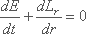

An equation of continuity must also be satisfied by the radiation
|  , | (9) |
where dE/dt is the rate of energy production per unit thickness of the
shell of radius r. The equation of energy conservation is
| , | (10) |
where Lr denotes the total net energy flux through a
spherical shell of radius r and
is the net release of energy per
gram per second by thermonuclear reactions occurring in the gravitationally stabilized solar
fusion reactor. It is assumed in equation (9) that the energy produced by nuclear reactions
equals the photon luminosity of the Sun, thus neglecting gravitational contraction and
subtracting energy loss through neutrino emission. The mean energy generation rate for the
Sun can be inferred from equation (10), that is
|
|
(11) |
Finally the thermonuclear energy produced in the solar core is transported by radiation
through the solar body to the surface. The force due to the gradient of the radiation
pressure equals the momentum absorbed from the radiation streaming through the gas
| , | (12) |
where P=aT4/3 is the radiation pressure,
is the opacity of the solar matter,
1/
is the mean free path of photons, and c is the velocity of light. The coefficient of the
radiation density, a, is related to the Stefan-Boltzmann constant
since
= ac/4. Equation (12) is the
energy transport equation taking into account the fact that energy transport in the deep
interior of the Sun is exclusively managed by radiation. From equation (11) follows the
temperature gradient driving the radiation flux, that is
| , | (13) |
allowing an estimate of the solar luminosity
| , | (14) |
taking into account equations (4) and (7). The luminosity is independent of the radius; it depends on the opacity and increases with mass. Equation (14) is an important result of the theory of the internal structure of solar-type stars, called theoretical mass-luminosity relationship. The fundamental result as given by equation (14) is that the luminosity of the star is simply determined by its mass, since this rule is based on the fact that the transfer of energy from the stellar interior towards the surface is managed by radiation. The stellar energy sources must somehow adapt to the stellar opacity. The luminosity of a solar-type star is determined largely by photon opacity and not by the energy source.
Gamma-ray photons produced in thermonuclear reactions in the core of the Sun are being scattered, absorbed or re-emitted by free electrons, ions, and atoms on their way to the surface of the Sun. The opacity in equation (12) is the measure of the solar material's efficiency at inhibiting the passage of the photons through the solar interior. The actual value of the opacity depends on various processes which may operate simultaneously: bound-bound transitions, bound-free transitions, free-free transitions, and scattering of photons by free electrons, ions and atoms. Scattering of photons by free electrons is the most important process for the solar core. Approaching the solar surface, bound-free transitions take over to determine the opacity of solar matter. The structure of the Sun depends in a sensitive way on the opacity, for if changes, the Sun must readjust all its parameters to allow the energy generated in the core to stream to the surface, not being blocked at any point in the solar interior.
Boundary conditions for the system of nonlinear differential equations (equations (1), (3), (10), (12)) have to be specified to arrive at specific solutions: At the solar centre it is r = 0, Mr = 0, Lr = 0, and at the assumed solar surface (this is actually the photosphere) it holds Mr = M, and for an age of t = 4.5 109 years, r = R, L = . Mass, radius, surface temperature, surface chemical composition, and luminosity of the Sun are known by observation. Using the conservation laws and known properties of gases (equation of state, opacity, energy generation rates), the internal structure of the Sun can be calculated in matching the observed properties at the solar surface. However, because the equations of solar structure form a system of first-order nonlinear simultaneous differential equations, they have to be integrated numerically to obtain a very detailed picture of the run of physical variables throughout the Sun. Order of magnitude estimations provided in equations (4), (5), (7), (11), and (14) can be considered only to be a first approach to the problem (Mathai and Haubold 1988). Figure 1-2 shows the numerical results of a standard solar model based on the system of differential equations as described above (Sears 1964; Sackmann, Boothrayd, and Fouler 1990; Guenther et al. 1992).